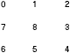

Menu G5 Step-by-step: Cross-Frame menus
Usually we can notice two types of cross-frame menus:
The first setup gives you maximum freedom to render the links while you will have to add control codes to each link, and you are actually using individual menus as "sub-menus" to the links and thus logically you don't have one united piece of menu content. The second setup lets you use one menu content (the same menu content can be used for non-frame pages) and takes care of the menu splitting for you, but you might need to work on the style of the top-menu to embed it into the navigation frame page "naturally".
Menu G5 supports both of them. We will go through the second setup first since it's a built-in of Menu G5.
The simplest case for cross-frame menu would be two sibling frames under the same frameset, top-bottom or left-right, you just need to take the following steps to implement the menu:
For example, the top-bottom frameset page:
<html> <head> <script language="javascript" src="...content-path.../path.js"></script> <script language="javascript" src="...script-path.../menuG5LoaderFSX.js"></script> </head> <frameset rows="60, *" border="0" frameborder="0"> <frame src="top.html" border="0" frameborder="0" scrolling="no"></frame> <frame src="main.html" name="main"></frame> </frameset> </html>
the top-menu frame page (top.html in this case):
<html>
<head>
<link rel=stylesheet href="...css-path.../menustyle.css" type="text/css">
<script language="javascript" src="...script-path.../menuG5FX.js"></script>
</head>
<body onload="initMenu('instance-name', 'top'); setSubFrame('instance-name', parent.main)">
...
</body>
</html>
Note: The initMenu("ins-name", "top") call tells that the page will show the top-menu of the menu instance. The setSubFrame("ins-name", frame-reference) call tells where to show the sub-menus of the menu instance.
and for pages in the sub-menu frame:
<html> <head> <link rel=stylesheet href="...css-path.../menustyle.css" type="text/css"> </head> <body> ... </body> </html>
That's it.
The settings you need to pay attention to would be the menu layout and menu direction. Usually, if it's a top-bottom frameset, set the top-menu as menu bar, then use "right-down" for top-menu in top frame or "right-up" for top-menu in bottom frame. If it's a left-right frameset, set the top-menu as menu pad (or just ignore it to take the default), then use "right-down" for top-menu in left frame or "left-down" for top-menu in right frame.
The pre-defined slots are nine (9) spots along the window/frame border:

They can be used to position the menu close to the frame border. See the following table for menu instance alignment reference with slot positioning:
| frameset layout | top-menu frame | menu placement | slot to use | alignment | sample |
| top-bottom | top | left | 6 | align:left; valign:bottom | [show] |
| center | 5 | align:center; valign:bottom | [show] | ||
| right | 4 | align:right; valign:bottom | [show] | ||
| bottom | left | 0 | align:left; valign:top | [show] | |
| center | 1 | align:center; valign:top | [show] | ||
| right | 2 | align:right; valign:top | [show] | ||
| left-right | left | top | 2 | align:right; valign:top | [show] |
| middle | 3 | align:right; valign:middle | [show] | ||
| bottom | 4 | align:right; valign:bottom | [show] | ||
| right | top | 0 | align:left; valign:top | [show] | |
| middle | 7 | align:left; valign:middle | [show] | ||
| bottom | 6 | align:left; valign:bottom | [show] |
[Cross-Frame menus (cont.)] [Back to index page]
# # #